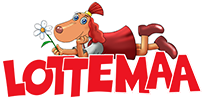

Lotte
Avaleht
Leia Lotte...
Lotte ja sõbrad
Küsi Lottelt
Meist

Huvitav: kuidas joonistada Lottet
Koeratüdruk Lotte on Andrus Kivirähki ja Heiki Ernitsa loodud tegelaskuju, kes elab Leiutajatekülas. Lottest on kirjutatud raamatuid, tehud joonisfilme ja lavastatud etendusi.